Clean-up C1–C10: a simpler default app, with Settings
Before (commit e580457) and after, captured headless with Playwright at 1366×860 (desktop) and 390×844 (phone), Test environment with mock AI, a fresh user each, on 2026-10-21. The orange strip is the mock-data notice, shown only with mock AI. Every Advanced switch is off in the "after" shots, which is what a new user sees.
C6A Settings page in place of the account drawer
The avatar button now opens /settings: the account and Sign out, Look and sound, and a new
Advanced section with six switches, all off to start with.
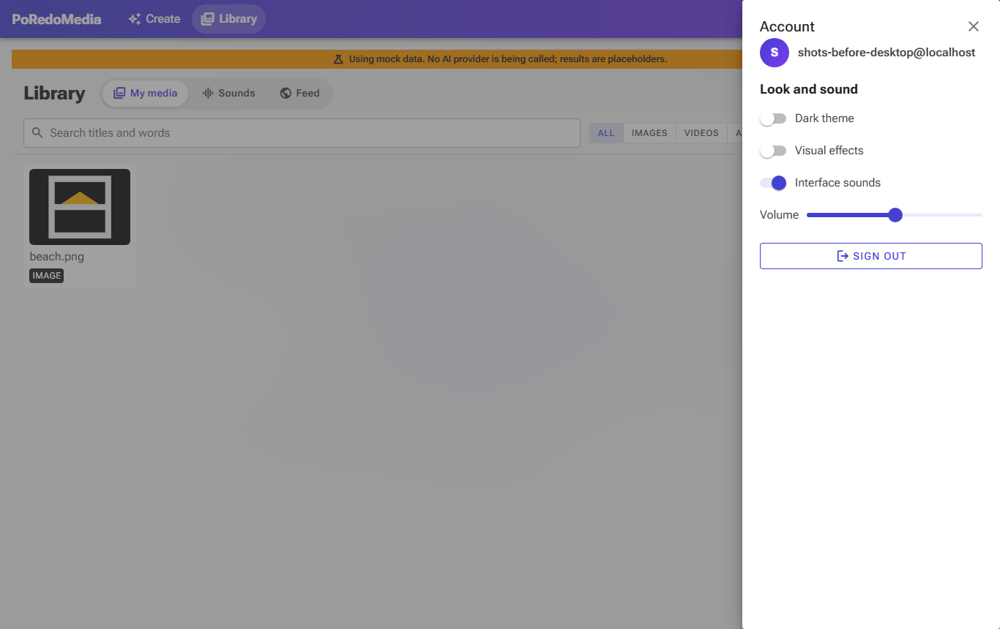
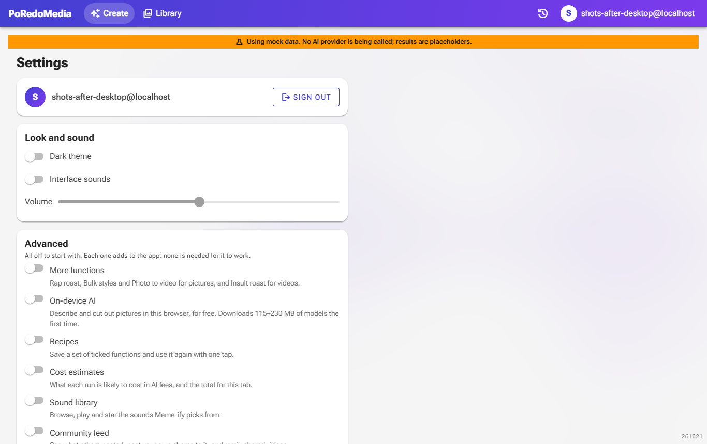
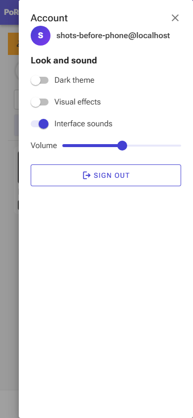
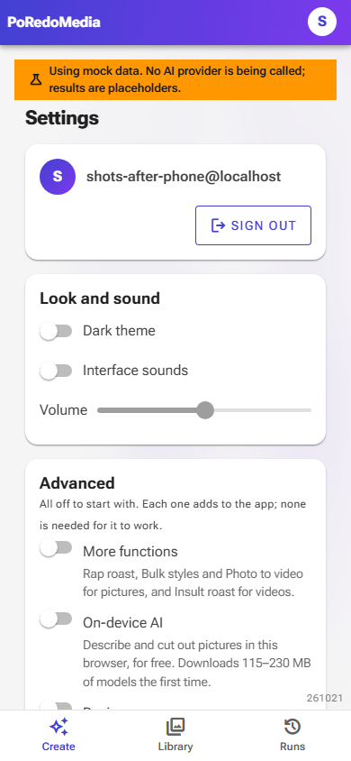
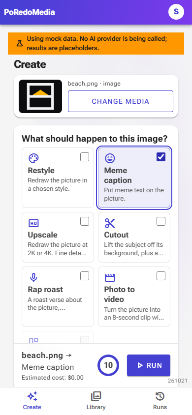
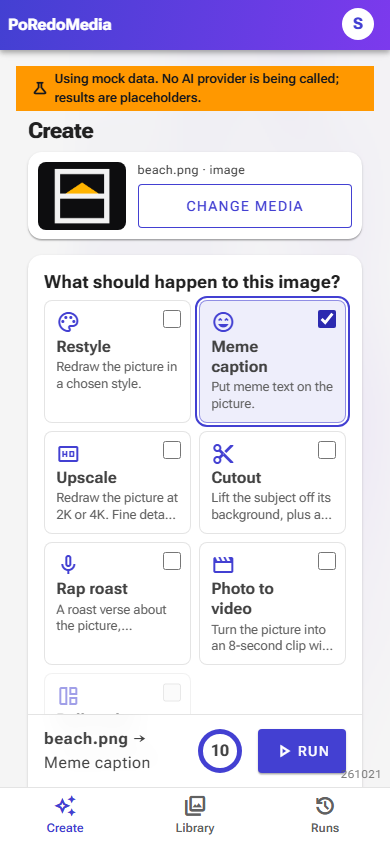
C4 · C2Create shows every function, and no model picker
The "AI model" box is gone: the server uses its one vision provider, and the on-device choice appears only with "On-device AI". Recipes and the cost estimate have their own switches. Every function the server can run is shown, as before: a first version hid four of them behind a "More functions" switch (the middle shot), which was then removed on request.
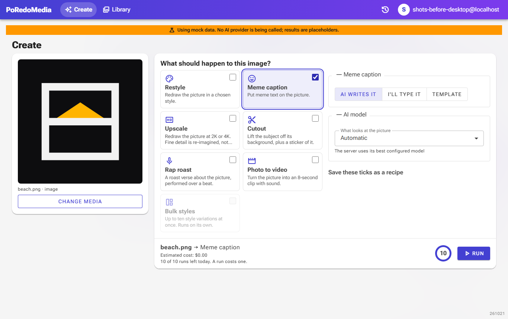
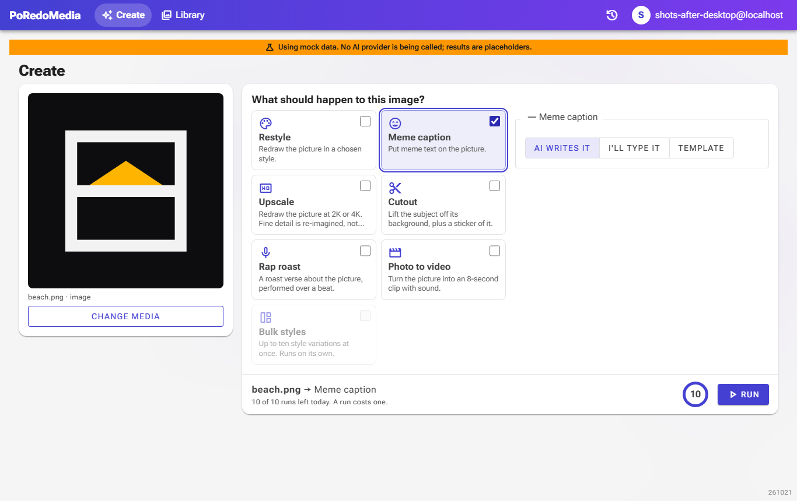
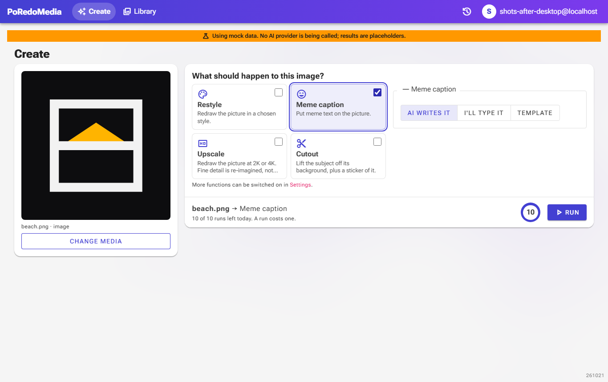
C8Home and Library without the feed and sounds
"Trending in the feed" and the session spend leave the home page; the Library's Sounds and Feed tabs appear only with their switches, so with both off the tab bar is not drawn. Their addresses still work.
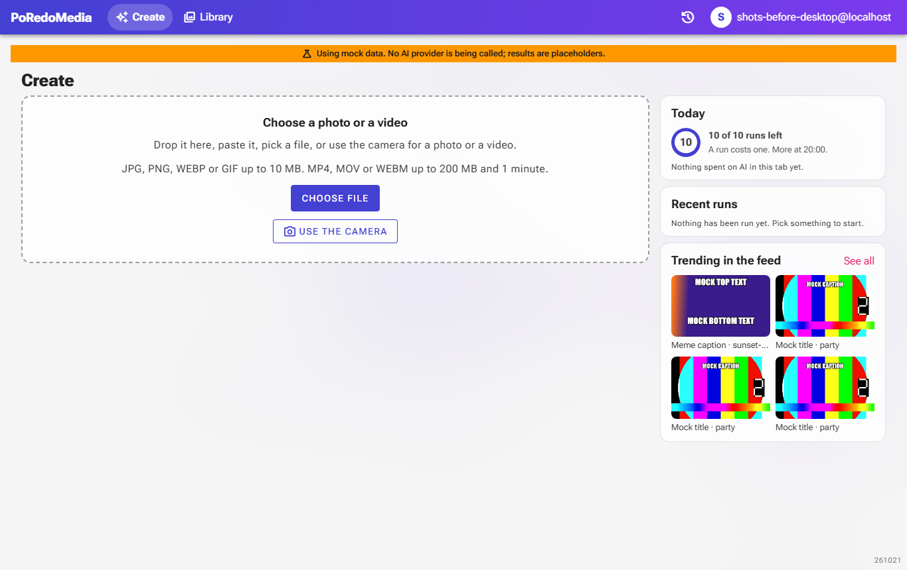
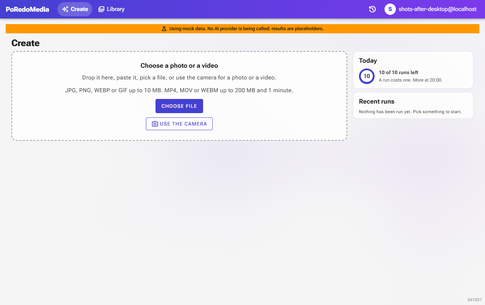
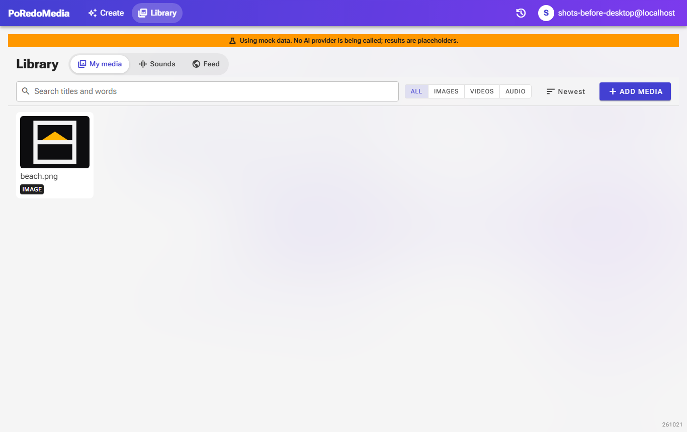
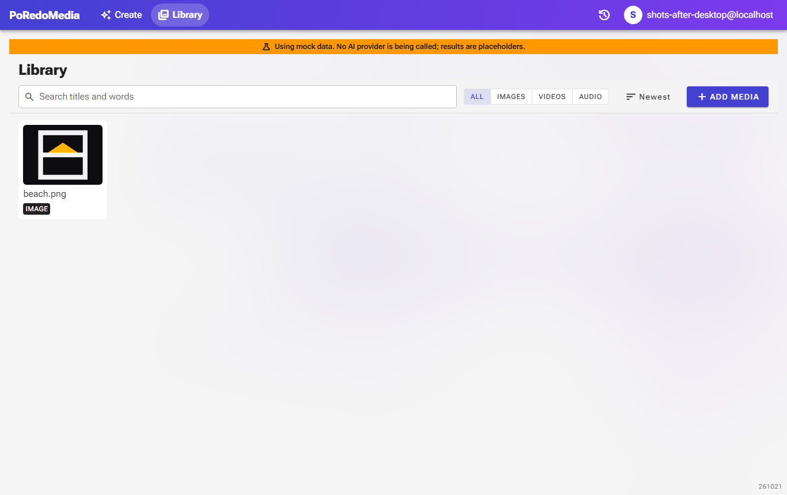
C5Effects that are gone, and effects that wait
- Removed: the 2.5D depth preview during Photo to video (it downloaded a depth model to the browser) and the gallery's tilt, magnet, shatter-on-delete and throw-to-delete physics.
- Off until "Visual effects" is switched on: glass backdrop, particles, the run orb, picture reveals, confetti, the roast concert, spectrograms. Interface sounds are off until switched on.
- None of this shows in automated browsers either way, so these shots look the same as before on that point.